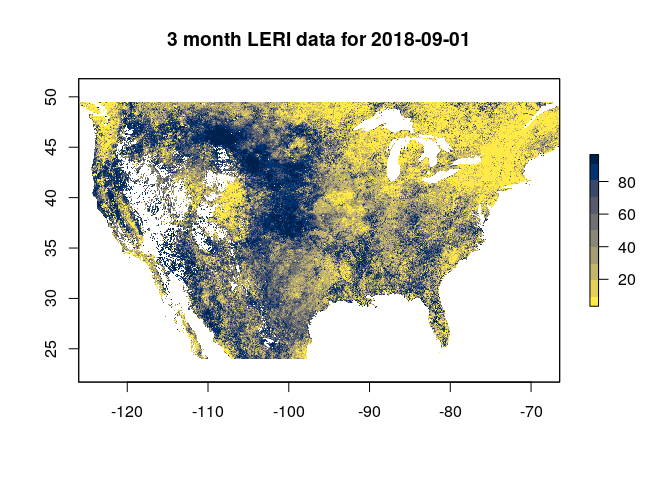

The leri R package facilitates access to the NOAA Landscape Evaporative Response Index data product.
Example
The LERI product is available from the year 2000 to present at a 1 km spatial resolution over the continental United States, at the following timescales:
- 1, 3, 7, and 12 month
- 8 day accumulated or non-accumulated during the growing season (April - Oct.)
If we were interested in medium term drought, we could get 3 month timescale LERI data for a particular date as follows:
library(leri)
r <- get_leri(date = "2018-09-01", product = "3 month")
#> Loading required namespace: ncdf4
r
#> class : RasterLayer
#> dimensions : 2844, 6617, 18818748 (nrow, ncol, ncell)
#> resolution : 0.009, 0.009 (x, y)
#> extent : -126.009, -66.456, 23.949, 49.545 (xmin, xmax, ymin, ymax)
#> crs : +init=epsg:4326 +proj=longlat +datum=WGS84 +no_defs +ellps=WGS84 +towgs84=0,0,0
#> source : memory
#> names : LERI_03mn_20180901.nc
#> values : 3.448276, 96.55172 (min, max)The get_leri function will download the NetCDF files from the NOAA ftp server and read them as RasterStack objects, which faciliates any other operations that users may need via the raster package. For example, we could plot the data using the raster::plot function:
library(raster)
#> Loading required package: sp
library(viridis)
#> Loading required package: viridisLite
plot(r, col = cividis(10, direction = -1),
main = "3 month LERI data for 2018-09-01")
LERI Resources
More information on the creation and recommended usage for LERI can be found here: https://www.esrl.noaa.gov/psd/leri/
Other potentially useful resources include: